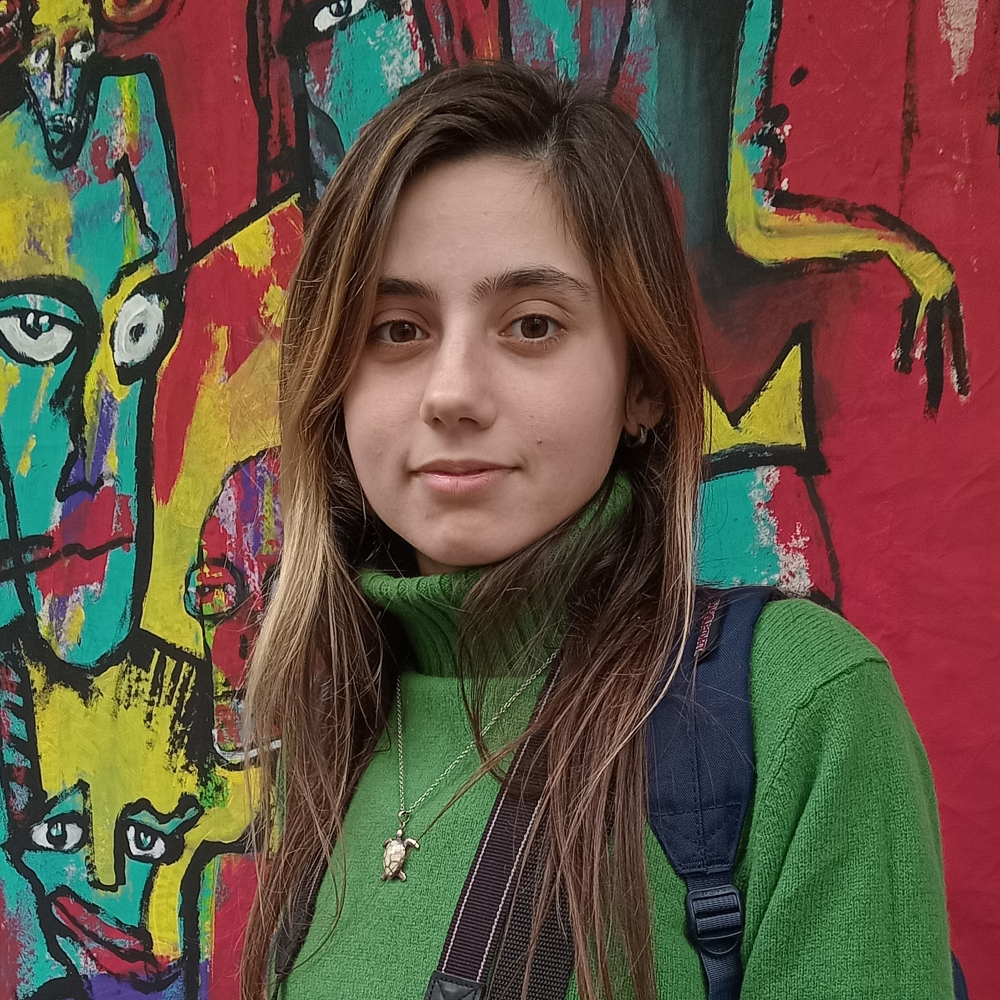

Sobre mí
Mi nombre es Sol, tengo 24 años y soy estudiante de la Licenciatura en Artes Multimediales, en la Universidad Nacional de las Artes. ¡Ya es mi tercer año en la carrera!
Este proyecto forma parte del Trabajo Práctico 1 para la asignatura Informática General, cátedra Drelichman.
Disfruto de dibujar, leer y escribir en mi tiempo libre. A veces comparto mi arte digital en las redes sociales. También soy una aficionada de la fotografía.